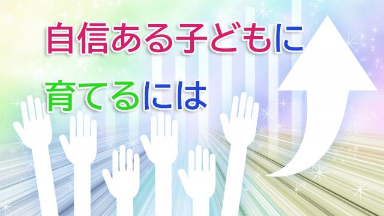

プラシーボ効果というのがある。
これは良く知られているように医者が患者に「これは良く効く薬ですよ」とニセの薬を渡したにもかかわらず、実際服用してみると一定の効果が現れる現象を言う。
これは患者が医師という権威ある者からの言葉を信じた結果、その信じ込む心が身体にも影響を与えるひとつの確証であり、別の面から言えば心のあり方次第で身体は健康にも病気にもなり得る好例といえる。
このプラシーボがより精度をあげるには医者自身をだます、二重盲検法という方法が効果的である。要するに実験者はニセの薬を医者に渡しながら「これは新しく開発された強力な薬です」などと言ってだまし、それを信じた医者が患者にその薬（ニセモノ）を投与した場合、症状の改善度はさらにアップするという。
二重盲検法では医者も患者も両方共だまされている。医者もそれが偽薬だと知らず―つまり良く効く薬と信じ込んで―患者に与えるほうがより効き目があることが実証されている。
実は教育の世界でも同じような現象が見られるのだ。
教育心理学におけるピグマリオン効果がそれだ。
ピグマリオンって何か可愛いらしい動物のような(笑)名前だが、名の由来は後で話すとして要するに教師が生徒に期待をかけるとその生徒の成績は改善される現象を言う。
この場合だまされるのは教師のほうだ。
1964年アメリカの教育心理学者R.ローゼンタールは、サンフランシスコの小学校である実験を行った。児童にまず知能テストを施し「将来成長が期待できる子とできない子」に振り分けたテスト結果を教師に見せたのだ。
だが、その結果というのは全くのデタラメで単に生徒たちの20%をランダムに「成長できる生徒」として選んだリストだった。
そして8ヶ月後にもう1度知能テストをすると驚くべきことが分かった。
ランダムに選ばれたに過ぎない、20%の期待度の高い生徒たちの得点が大幅に伸び、学習意欲や自主性も向上したのである。
医者が薬（ニセ）の効果を信じ込んでいれば効き目が増すのと同様、教師が生徒の能力（ニセ）を信じていれば生徒は本当に伸びることが分かったのだ。
ということは逆に教師が「この子たちは出来ない生徒だ」と思って接すれば成績は下がるということになる。これをゴーレム効果という。暗示による効果といえばそうだが暗示効果は決してバカにできないことがこれらの実験で分かる。
これは私にも覚えがある。日ごろから成績上位の生徒たちには彼らの能力に対する疑いがないので、多少サボっていたりイマイチの成績をとってもどこか安心しているので結局うまくいく。これとは逆に能力を疑っている生徒―日ごろからサボっていたり成績もよくない子―たちは低迷する傾向があったのだ。
ローゼンタールはこのことを「教師の期待」が子どもに影響を与えたと言っているが、私は期待というよりむしろ信頼だと思っている。
教師なり親なり子どもの能力を心の底から信じれば子どもも伸びるし、疑う気持ちが少しでもあれば伸びないというのが私の実感だ。だが人を信じるのはなかなか難しい。
「信じてる」と口先で言ったり頭の中でそう思っただけでは信じていることにならないからだ。
これは確か以前のブログでも言ったと思うが本当に信じているとき、信じていることさえ頭にのぼらないからだ。
あなたが日本人なら「自分は日本人と信じている」とは言わないだろう。
もしあなたが女なら「私は女と信じます」と自分に言い聞かせたりはしないだろう。
当り前すぎて意識にものぼらないはずだ。だからことさら「信じようとする」のは心底信じていないからに他ならない。
信じていれば相手も期待に応え、信じていなければ（疑っていれば）期待に応えない。とてもシンプルな話になる。
私がいつも「親は子を心配してはいけない」と言うのも、心配は「信じていない（疑っている）」というメッセージを伝えることに他ならないからだ。やたらと子どもを心配する親が多いが子どもを伸ばしたいなら今すぐ心配を止めることだ。
それには子どもの肯定的な面に注目すること。ダメな点を探すのではなく、良い点―足が速い、手先が器用、理解が速い、人に優しいなど何でも良い―を考えつく限り探しリストアップすれば良い。
そして信じるという言葉さえ浮かばないくらい「我が子は大丈夫」と安心すること。
そう。本当の信頼とは安心に他ならない。子どもの存在そのものを安心して受け入れたとき、子どもは初めて己に自信を持つことができる。
よく親の方から「子どもに自信をもたせるにはどうすればいいですか」と聞かれるが答えは簡単で、子どもを疑わず安心していればよいということ。
子どもを疑っていながら自信をもたせることはできない。先のピグマリオンでも証明されているのだ。
ちなみに私には大学生の息子が2人いるが、私は彼らが幼児のときから信頼することに決めていた。悪さや危険な行為はその都度叱ったりはしても（しつけの範囲）、彼らの存在そのものはきちんと受け入れ信頼し安心していた。
結果としていま2人とも私の考えていたほぼ理想通りの姿になっている。小中高と彼らはたとえ悪い点をとろうと、何かでうまくいかないときがあろうと己の能力や才能を疑うこともなく、自分なりの興味関心に沿って各々の才能を自分で伸ばしていったからだ。
子どもを信じ切ったときその成果はとてつもなく大きい。親からの信頼が子どもの潜在意識の中でゆるぎない自信を育てるからだ。
本当の自信はそうしてできる。
※ピグマリオン効果 その由来
ピグマリオンとは、ギリシャ神話に登場する王様の名前で、自らが彫った理想の女性像に恋をした人物として登場する。王は彼女への愛が報われるように祈り続けた結果、神が願いを聞き届けてくれその彫刻（女性像）に命が吹き込まれ2人は幸せに暮らしたという神話。
要するに「期待を持ち続けることで良い結果が訪れる」ことを表している。
◇◇◇◇◇◇◇◇◇◇◇◇◇◇◇◇◇◇◇◇◇◇◇◇◇◇◇◇
長老カフェぶっちゃけ教育トーク第４回（後編）を公開しました！
「ルールを守る子＝伸びる子ではない！？
長老カフェ第４回テーマ「伸びる子ども」〜後編〜」
是非ご視聴ください。